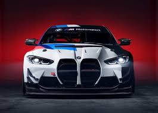
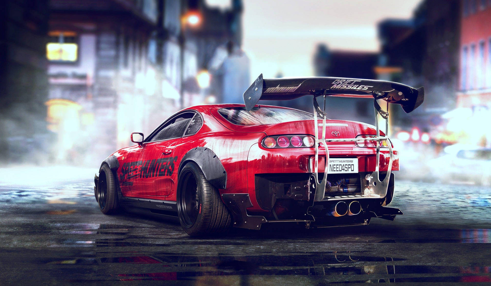
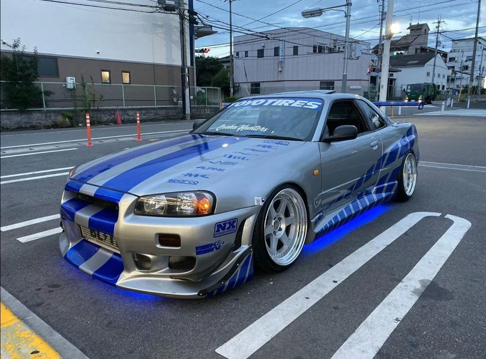

BMW M4
El BMW M4 es un carro deportivo moderno con un motor twin turbo que ofrece gran potencia y velocidad. Su diseño agresivo y tecnología avanzada lo convierten en uno de los favoritos actuales.
Los más icónicos del automovilismo
Soy Tomás, estudiante de informática apasionado por los autos deportivos y la tecnología. Me encanta diseñar páginas web y aprender programación tengo 16 años y espero trabajar en el mundo de la programacion a los 20 estos son mis carros favorito pero el primero que me gustaria comprarme sera un Honda acorr 2.0 soy un niño de casa que me gustar mucho jugar videos juegos de carros, vivo con mis padres lo cuales me enseñaron a conducir desde los 11 años, creo que eso fue mi impulso a que me gutaran los autos y ya a los 16 puedo decir que soy un verdadero driver que solo espero los 18 para sacar mi licencia, mi color favorito es el rojo no se si se nota por la pajina y nada esto fue todo sobre mi

El BMW M4 es un carro deportivo moderno con un motor twin turbo que ofrece gran potencia y velocidad. Su diseño agresivo y tecnología avanzada lo convierten en uno de los favoritos actuales.

El Supra Mk4 es una leyenda del tuning gracias a su famoso motor 2JZ. Es conocido por su resistencia, velocidad y por ser protagonista en la cultura de carreras callejeras.

El Nissan Skyline GT-R es uno de los autos más icónicos del mundo JDM. Su rendimiento en pista y su tecnología lo hicieron dominar en carreras.
Escríbeme para más información: